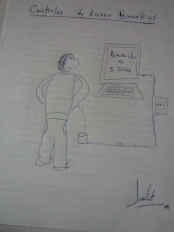
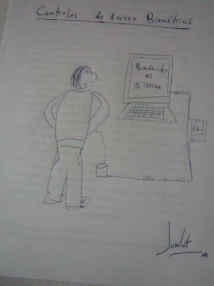

Controles de acceso biométricos
Hoy, mientras estudiaba para rendir el curso de Seguridad en Redes que estoy haciendo, se me ocurrió este chiste:

Hoy, mientras estudiaba para rendir el curso de Seguridad en Redes que estoy haciendo, se me ocurrió este chiste:

El ejemplo consiste en un plano de 800x600 puntos con el punto (0,0) en la esquina superior izquierda. En el plano hay puntos y figuras (formadas por puntos). Uno de los puntos es el origen y otro el destino. El problema a resolver es encontrar el camino más corto desde el origen al destino moviéndose de punto a punto y sin pasar sobre una figura.
La heurística utilizada es la distancia en línea recta desde la posición actual a la posición del objetivo.
Teniendo Python y PyGame instalados, obtener el código fuente:
svn co http://svn.juanjoconti.com.ar/astar/tags/astar-only/ astar
y dentro de la carpeta astar ejecutar gui.py:
cd astar
python gui.py
El primer click que se haga marcará el punto origen (verde) y el segundo el punto destino (rojo).
Luego se pueden agregar tantos puntos sueltos o figuras como se quieran. Si se hace uno o dos clicks y luego se aprieta la barra espaciado, uno o dos puntos son añadidos al planto. Si se hacen más de dos clicks antes de apretar la barra espaciadora, entonces una figura formada por los puntos marcados es añadida.
Se siguen cargando tantos puntos y figuras como se quiera. Finalmente, al aprender Enter se ejecuta el algoritmo de búsqueda y si se encuentra un camino-solución, este es graficado.
Otros casos de prueba:
En PHP uno pude ir mandando datos al cliente (navegador) a medida que los va procesando en el servidor. En Django siempre creé el texto de la respuesta para luego pasársela al objeto HttpResponse. A pesar de que había preguntado varias veces en el canal de chat de Django si podía hacer algo así y me habían respondido que no, tenía la intuición de que algo se podría hacer y pensé en iteradores.
Por suerte este fin de semana tuvimos un gran evento de Python y alojé en mi casa a John, quien me explicó en 5 minutos cómo hacerlo. Aquí una recreación de su ejemplo (views.py):
from django.http import HttpResponse
from time import sleep
def gen():
for x in range(80):
sleep(1)
yield '*' * x + '<br/>'
def test(request):
return HttpResponse(gen(), mimetype='text/html')
Queda para el lector ver la salida en su navegador.
gen es una función que al llamarla devuelve un generador. El primer parámetro de HttpResponse puede ser un generador o cualquier objeto con el método __iter__.
En la misma jornada Nubis, estuvo explorando esto mismo desde distintos ángulos.
Auditorio de la UTN FRSF, Lighting Talks desarrollándose (5 minutos por disertante para explicar ALGO).
Tuvismos:
<li>Haciendo plata con Software Libre - John Lenton</li> <li>Python LEX & YACC - Yo</li> <li>KSS - Silvestre Huens</li> <li>svn +Track en USLA - David Casco</li> <li>Decoradores en Python - Facundo Batista</li> <li>Fabián Ezequiel Gallina - Python-mode para Emacs</li> <li>Procesando Imágenes con Python - Esteban Peiro</li> <li>Reply (aprendizaje por refuerzo) - Lucio Torre y Ricardo Kirkner</li> <li>Defendiendo al Software Libre - Calos Miranda Bonina</li> <li>Creación colaborativa de empresas - Leandro Monk</li> <li>PyWars - <span style="text-decoration: line-through;">Arturo Díaz Santor</span> Arturo Elias Antón</li> <li>Historia de conferencias de Python / PyCON Ar - Facundo Batista</li>
(Si le escribí mal el nombre a alguno, avise!)
Fin del post, el resto del día incluye: sorteos, entega de certificados y luego un sprint gastronómico.
Saludos!
Bonus Track: Una fotito del mediodía
"La desvalorización del mundo humano crece en razón directa de la valorización del mundo de las cosas."MARX, Karl (Filósofo alemán.)
Algunas cámaras de fotos tienen un dispositivo que detecta su posición, entonces si sacamos una foto con la cámara posicionada verticalmente, la imagen resultante es más alta que ancha. Lo mismo sucede en el caso contrario, si se saca una foto con la cámara en forma horizontal, la imagen resultante será más ancha que alta.
Esto parece bastante bueno. Lamentablemente muchos dispositivos (cómo los celulares) no vienen equipados con este dispositivo y todas las fotos terminan siendo, por ejemplo, más altas que anchas. Otra cosa a tener en cuenta es que la mencionada funcionalidad no funciona del todo bien en todas las cámaras. Si bien en el siguiente caso es algo apropiado:
En este no lo es:
Y nos interesa convertirla en:
El problema crece cuando sacamos muchas fotos[0]. Ya sea para compartirlas en Internet o para guardarlas en nuestra computadora queremos que estén posicionadas correctamente. En GNU/Linux es fácil rotar una imagen, el comando convert de ImageMagic, por ejemplo, lo hace en un instante. Si tenemos muchas imágenes a retocar, podemos hacer un script que recorra una lista de archivos y sobre todos realice el proceso. Pero en la mayoría de los casos no será tan simple. Querremos modificar algunas imágenes, pero querremos que otras se mantengan en su posición original. Lo ideal es utilizar un visualizador de imágenes y cada vez que encontramos una cuya posición queremos rotar, indicarle esto a visualizador para que la imagen sea rotada definitivamente.
GQview viene preparado para hacer esto, utilizando el comando jpegtrans. No tenía instalado este programa en mi computadora, pero pude editar la configuración del software para que ejecute mis comandos personalizados.
En Editar/Preferencias... solapa Editores podemos especificar una secuencia de comandos para ser ejecutados al elegir una opción del menú:
Completé las filas 7 y 8 con los siguientes valores:
Rotar imagen (sentido horario) - convert -rotate 270 %p %p
Rotar imagen (antihorario) - convert -rotate 90 %p %p
Ahora cuando estoy visualizando imágenes y encuentro alguna mal orientada, simplemente tengo que apretar Ctrl-7 u Ctrl-8 para ajustarla.
[0] en mi caso unas 1000, en mi viaje a Brasil.
Así como lo leyeron, mi humilde participación (de diez horas de código) en esta competencia fue el juego más votado (incluyendo a los juegos presentados por equipos). No me subí al podio, ni estuve en el top ten como me hubiese gustado, pero tengo el agrado de que 48 de mis pares se hayan tomado el trabajo de bajar mi juego, probarlo y votarlo.
En PyWeek solo aquellos que presentan juegos pueden votar. Básicamente se votan 3 características: Diversión, Producción e Innovación. Adicionalmente, al votar se puede dejar un comentario. Dejo aquí alguno de los comentarios que recibí:
Fun: 3 Prod: 3 Inno: 4
That was quite fun. It was a nice touch to put photographs of writings in paper and photos from your trip (probably took less time, even :)). The idea is fairly simple, but it is fun and it is a nice way to use the theme. The number of levels was just right to enjoy the concept well and the challenge was good for a person who doesn't have a music-oriented ear. The photos are nice to look at, too. Well done.
Fun: 2 Prod: 3 Inno: 4
Found it quite difficult and a little boring, although a novel idea, I liked the hand drawn(on paper) stuff... and it's particularly impressive for 10 hours :)
Fun: 3 Prod: 5 Inno: 4
Hilarious game -- the menus were hard to read, but the way you did them was fantastic. Comprehensive help, I never really got lost trying to play the game. It was a lot of fun to play around with, and I was able to beat the whole thing. Nice job on the game -- especially for one done so quickly! You set a small scope and did fantastically with what you had -- well done!
Fun: 3 Prod: 3 Inno: 4
For such a simple game it works pretty well. Randomly generating some tunes could have created some replayability. As it is, it does challenge the brain!
Gracias!
Contesto cualquier pregunta siempre y cuando 'no lo sé' sea una respuesta válida.Isaac Asimov
El próximo 4 de Octubre se llevará a cabo en instalaciones de la Universidad Tecnológica Nacional, Facultad Regional Santa Fe, la 3ra Jornada Python en Santa Fe [1]. Orientadas a programadores y profesionales de sistemas, estudiantes y público en general interesado en la programación, los invitamos a participar registrándose en nuestra web [2]. La asistencia es libre y gratuita.
Esta jornada consiste en una serie de charlas relacionadas con el lenguaje de programación Python. Ya está disponible el programa del evento [3].
¿Qué es Python?
Python es un lenguaje de programación interpretado, dinámico y orientado a objetos que puede ser utilizado en diferentes desarrollos de software y en múltiples plataformas. La característica de ser multiplataforma es algo muy interesante para los desarrolladores. El lenguaje se encuentra soportado en Unix, GNU/Linux, Widows/DOS, Macintosh… y la lista sigue. Desde grandes mainframes a pequeñas Palm. En la web oficial [4] del lenguaje encontrará mayor información y mucha documentación.
Y en el país existe una comunidad de desarrolladores muy fuerte, agrupada en PyAR, Python Argentina [5].
¿Quién utiliza Python?
La NASA, Google, Yahoo, Walt Disney y Red Hat son algunas de las grandes organizaciones que trabajan con este lenguaje. Google contrató a su creador, Guido van Rossum. En la mayoría de las distribuciones GNU/Linux encontramos Python ya instalado (se usa mucho como lenguaje de script para automatizar tareas). Y en el país también hay numerosas empresas que trabajan con Python: Lunix, Except, Lambda Sistemas, etc.
Recuerden registrarse [2] y los esperamos el 4 de Octubre!
[1] Web de la jornada: www.pythonsantafe.com.ar
[2] Registración: www.pythonsantafe.com.ar/registracion
[3] Programa: www.pythonsantafe.com.ar/programacion
[4] Web del lenguaje: www.python.org
[5] PyAR: www.python.com.ar
Mi amigo Leandro Rojas empezó un blog dónde escribe sobre su gran pasión, el fútbol. Bienvenido a la blogósfera!
{kind=link}
{kind=link}
{kind=link}
{kind=link}
{kind=link}
{kind=link}
{kind=link}
{kind=link}
{kind=link}
{kind=link}
{kind=link}
{kind=link}
{kind=link}
{kind=link}
{kind=link}